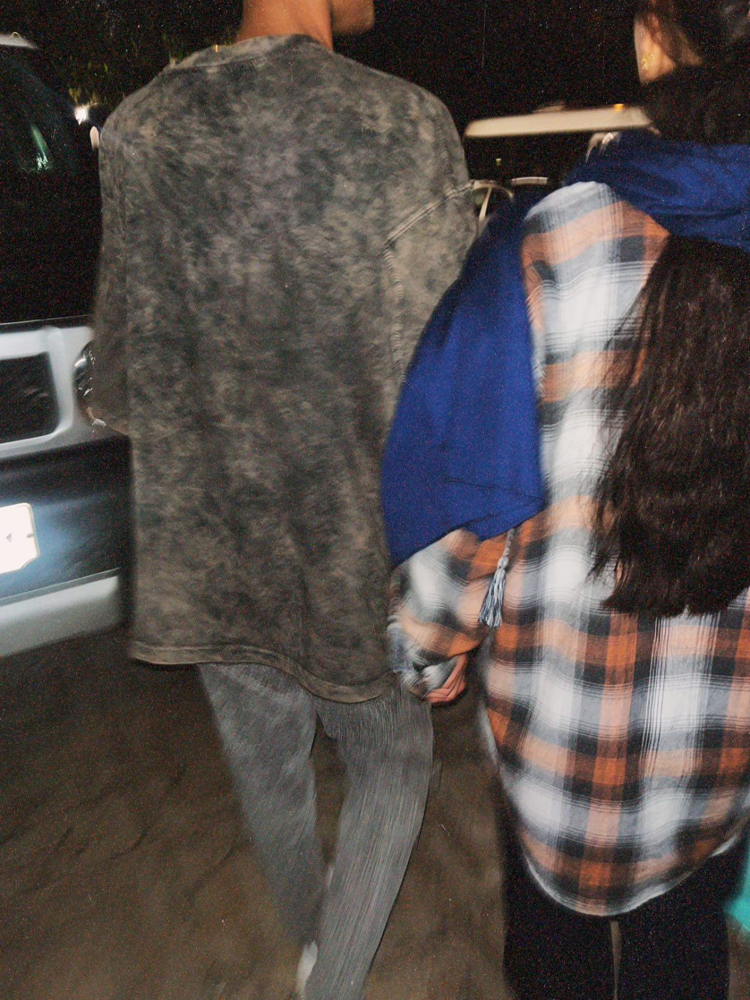
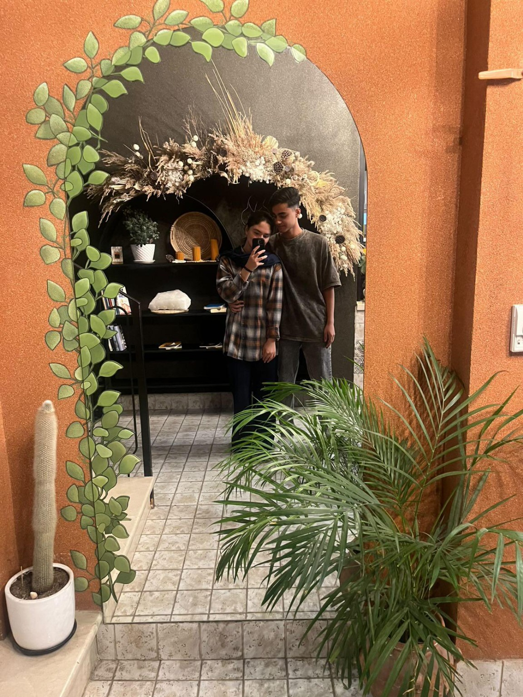

این صفحه فقط برای تو ساخته شده، چون تو خاصترین آدم دنیایی...
❤️
📸


چند جمله فقط برای تو 💌
تو دلیل لبخندمی حتی وقتی دنیا قهره باهام.
با تو، همه چیز قشنگتره... حتی سکوت.
من خوشبختم چون تویی کنارم.
در حال بارگذاری...
وقتی برای اولین بار دیدمت...
اولین باری که قرار بود ببینمت از لحظهای که منتظرش بودم قلبم بی قرار بود.
یه استرس عجیبی داشتم نه از از اون استرسای بد یه ترکیب قشنگ از هیجان خوشحالی و هزار فکر قشنگ.
و وقتی اومدی...
همه چی واقعی تر از چیزی بود که تو ذهنم ساخته بودم.
با اون لبخند با اون نگاه استرسم دو برابر شد ولی دلم آروم تر از همیشه بود.
باهم دور پارک قدم زدیم حرف زدیم خندیدیم نگاهمون قاطی شب شد و اون شب
یکی از قشنگترین شب های عمرم شد.
اونقدر خوب بود که وقتی خوابیدم انگار قلبم هنوز توی همون پیاده رو راه میرفت
و من توی خواب هم لبخند میزدم.
اولین بغل...
اولین بار که بغلت کردم یه جس عجیبی پیچید تو دلم یه جور آرامش که تاحالا تجربه نکرده بودم.
بغلت بهترین جایی بود که تا جالا بودم...
یه جایی که انگار بهش تعلق داشتم.
وقتی صورتتو بوسیدم یه لحظه دلم ریخت...
انگار تمام دنیا توی اون یه بوسه خلاصه شد.
اون لحظات تموم نشد...
هرشب یادش میافتم با همون گرما همون آرامش همون لبخند و ته دلم همیشه میگم:
خوش به حال اون روز که تو بغل من بودی.